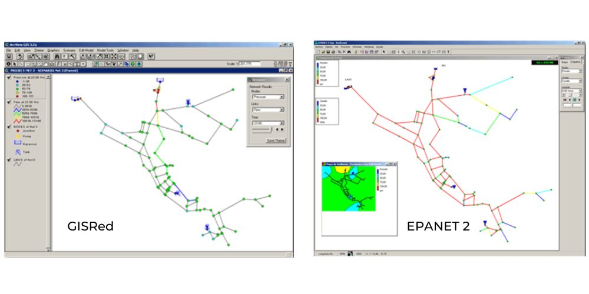
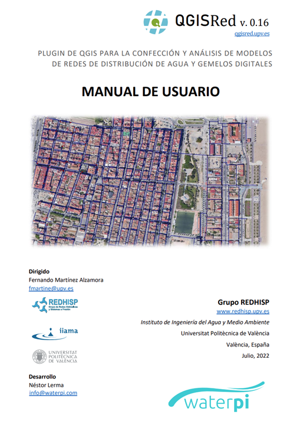

¿Qué es QGISRed?
QGISRed es un complemento de QGIS (o plugin) destinado a facilitar la tarea de construir y analizar modelos hidráulicos de redes de distribución de agua, desde los esquemas más sencillos hasta el nivel de detalle requerido por los Gemelos Digitales.
El plugin es de uso libre y aprovecha todas las ventajas de trabajar en un entorno GIS para georreferenciar los elementos de la red, superponerlos sobre fondos geográficos, editar la información gráfica y alfanumérica, visualizar la información por capas, personalizar la simbología, realizar operaciones de geoprocesamiento, etc.
A diferencia de otros plugins, QGISRed no es un conjunto de herramientas aisladas para facilitar determinadas tareas, sino que constituye una plataforma de trabajo desde la cual se puede construir o importar el modelo de la red, editar su trazado, declarar las propiedades de los elementos, construir un escenario de cálculo y analizar los resultados, todo desde el mismo entorno.
De este modo QGISRed puede emular todas las capacidades de EPANET 2.2, ampliando sus opciones de edición y de cálculo.
Además de ello, QGISRed ofrece algunas ayudas para confeccionar los modelos, como la verificación de todos los datos, el cálculo automático de longitudes, la interpolación de cotas a partir de un MDT, la asignación de rugosidades a las tuberías a partir del material y edad, la asignación de las demandas a los nudos a partir de los datos de población o de los consumos medios registrados, y la gestión de escenarios de cálculo.
Como herramienta de modelación avanzada, QGISRed ofrece opciones adicionales para ampliar el modelo y conectarlo con los datos reales, convirtiendo así de forma progresiva el modelo hidráulico de la red en un Gemelo Digital.
Emular las capacidades de EPANET permite acelerar la curva de aprendizaje en el manejo de QGISRed.
Además, los conocimientos requeridos de QGIS para su uso son mínimos, pues se han desarrollado herramientas propias para llevar a cabo todas las operaciones necesarias. Sin embargo, los especialistas en QGIS podrán sacar aún mucho más provecho a las prestaciones ofrecidas por QGISRed.
A través de esta página se ofrecen numerosas ayudas para convertirse en poco tiempo en un experto en la modelación de redes, y ofrecer soluciones profesionales a las empresas mediante las herramientas asociadas al Gemelo Digital.
Finalmente cabe resaltar que el modelo de datos utilizado por QGISRed es público y con una estructura muy simple, orientada fundamentalmente a realizar todo tipo de análisis, lo que permite conectar QGISRed con otras aplicaciones de modelado de redes como EPANET, InfoWorks o WaterGEMS.
QGISRed se ofrece por ahora solo en Inglés, y en breve estará también en Español. Sin embargo, QGISRed funciona por ahora solo sobre Windows y para versiones posteriores a la 3.2.
Descargar plugin
Antecedentes
La idea de potenciar las prestaciones de EPANET mediante su conexión con un GIS no es nueva para nuestro grupo de investigación. Ya en 2004 Fernando Martínez, director del actual proyecto QGISRed, dirigió un proyecto con similares objetivos y prestaciones, denominado GISRed.
GISRed se programó en el lenguaje Avenue para ArcView 3.2, y llegó a estar configurado por más de 600 scripts. Se utilizó internamente como herramienta de ayuda para confeccionar varios planes directores de mejora de abastecimientos, entre ellos el abastecimiento a la ciudad de Valencia y su área metropolitana, con una población servida de 1,5 millones de habitantes, como hito más importante.
Sin embargo, la falta de robustez del producto limitó su difusión en primera instancia, y al poco tiempo ArcView quedó obsoleto, siendo abandonado también el lenguaje Avenue.
En los 15 años siguientes ninguna aplicación, dejando aparte los productos comerciales, llegó a proporcionar las prestaciones que GISRed ofrecía para ayudar en la confección de modelos de redes de abastecimiento. Mientras tanto el código de EPANET fue liberalizado, y en 2015 se fundó una sección dentro de la Open Water Analytics (OWA) para continuar desarrollando el módulo de cálculo de EPANET. Finalmente, en Diciembre 2019 se lanzó la última versión 2.2 de la Toolkit.
En 2018, tras los espectaculares avances del software libre QGIS, nos decidimos a reproducir las prestaciones de GISRed en este nuevo entorno, y a mejorar de paso tanto las prestaciones de aquel producto inicial, equiparándolas a las que ofrece la última versión de EPANET 2.2. La primera presentación en público del nuevo producto, ya denominado QGISRed, se realizó durante la Conferencia CCWI de 2019, en Exeter (UK).
Por otra parte, la experiencia adquirida por los autores en el desarrollo de uno de los primeros Gemelos Digitales del mundo para la ciudad de Valencia, nos llevó a potenciar aún más las prestaciones del nuevo plugin para permitir migrar de un modelo hidráulico convencional a la construcción de un Gemelo Digital.
Aplicaciones
QGISRed pretende cubrir todas estas situaciones, siendo las principales aplicaciones en cada caso:
Las redes de distribución llegan a convertirse con el tiempo en sistemas complejos de manejar, por su continua expansión y adaptación en función de las necesidades. Los modelos se emplearon en principio con fines de diseño, y con el tiempo se extendió su uso para simular el comportamiento dinámico de las redes en explotación. Hoy se les pide a los modelos que reproduzcan fielmente el comportamiento de la red en cualquier instante del pasado o presente, y que predigan su comportamiento a corto plazo a través de los gemelos digitales.
Modelos Estáticos
- El dimensionado de tuberías y elementos de regulación para el escenario más desfavorable
- La planificación de nuevos escenarios ante ampliaciones de la red, rehabilitación de componentes, reformas, etc.
- La calibración del modelo a partir de medidas en momentos puntuales
- La simulación de la respuesta del sistema en situaciones extremas como roturas, elementos fuera de servicio, etc.
- El análisis de la criticidad de la red, para detectar los elementos más débiles
- La sectorización de la red garantizando el suministro en las condiciones más desfavorables
- La realización de auditorías energéticas que afecten al diseño y concepción del sistema
Modelos Dinámicos
- El establecimiento de las consignas de los elementos de regulación para garantizar valores adecuados de las variables hidráulicas en todo momento
- La calibración del modelo a partir de medidas en periodos prolongados
- El análisis de la fiabilidad y capacidad de respuesta de la red ante cualquier eventualidad
- La programación de actuaciones de mantenimiento en la red
- La optimización del régimen de operación del sistema para reducir el consumo energético
- El seguimiento de la calidad del agua y la programación de las actuaciones requeridas
- La gestión de las presiones de suministro para reducir las fugas en la red
- La determinación de indicadores de desempeño (KPIs) para periodos prolongados
Gemelos Digitales
- La carga del modelo con datos reales en cada momento (demandas, niveles en depósitos, modos de operación)
- El mantenimiento del modelo hidráulico y de calidad permanentemente calibrado
- La inferencia del valor de cualquier magnitud no medida, a través de la simulación
- La detección de cualquier anomalía en los parámetros de control de la red
- La simulación de posibles actuaciones previas a su ejecución ante cualquier evento imprevisto
- La detección precoz de cualquier evento contaminante del agua
- El seguimiento en tiempo real de todo tipo de balances hidráulicos, energéticos o de sustancias disueltas
- La predicción del comportamiento de la red a corto plazo
Instalación
QGISRed no es una aplicación autónoma de escritorio al uso. Es un complemento de QGIS, y por tanto se requiere instalar previamente este producto desde la página oficial qgis.org. Sin embargo, QGISRed funciona por ahora solo sobre Windows y para versiones posteriores a la 3.2.
Instalación del complemento QGISRed
Una vez instalado QGIS, para instalar el complemento QGISRed basta con seguir los siguientes pasos:
- Desde el menú Complementos, elegir la opción Administrar e instalar complementos.
- Desde la pestaña Todos, buscar por su nombre el plugin QGISRed, el cual aparecerá al ser un complemento registrado en el repositorio oficial de QGIS.
- Pulsar el botón Instalar Complemento, y en cuestión de segundos se habrá instalado la aplicación. Cerrar finalmente la ventana.
- En la barra de menús aparecerá el nuevo menú de QGISRed y en la botonadura se mostrará también la nueva barra de botones de QGISRed.
- Falta un último paso. En cuanto intentes utilizar por primera vez cualquier opción de QGISRed se mostrará una nueva pantalla solicitando que completes la instalación con las librerías (dlls) que contienen todos los algoritmos. Es solo unos segundos más.
- Con ello ha finalizado la instalación de una aplicación que te sorprenderá por las numerosas prestaciones añadidas, todas ellas orientadas a la confección y explotación de modelos de redes hidráulicas.
Versiones beta y actualizaciones
Cada vez que se lance una nueva versión oficial, se mostrará un mensaje emergente informando de su existencia. Desde la propia ventana del complemento QGISRed, se invitará al usuario a actualizar la versión actual pulsando el botón Actualizar Complemento. A continuación, al pulsar cualquier botón de QGISRed, se pedirá también actualizar las librerías.
Instalar desde QGIS Plugin Manager

Proyecto en GitHub
QGISRed no es un producto cerrado. La parte del código de QGISRed que interacciona con las funcionalidades de QGIS está desarrollada en Python y es dominio público, de acuerdo con los términos de la licencia GNU GPL 2.0 de QGIS. Dicho código aloja todas las funcionalidades que afectan a la personalización de la interfaz gráfica de QGIS tras instalar el plugin, así como a ciertas capacidades de edición y selección de los elementos de la red.
Sin embargo, la mayor parte del código de QGISRed está desarrollado en C# para Windows, configurando una serie de librerías denominadas GISRed.xxx.dll, las cuales contienen la mayoría de los algoritmos, formularios y cuadros de diálogo propios de la aplicación. Estas librerías no utilizan ninguna otra librería externa excepto la librería Epanet2.dll (Toolkit 2.2, Dic. 2019) y la librería Shapelib.dll.
Una sección muy importante del portal es la pestaña Issues, que está plenamente activa, y donde los usuarios pueden reportar cualquier incidencia. Está dividida en incidencias Abiertas y Cerradas. Para crear una nueva incidencia es necesario estar registrado previamente en GitHub.
Créditos
El equipo detrás de QGISRed
El proyecto QGISRed nace por iniciativa del Grupo de Investigación en Redes Hidráulicas y Sistemas a Presión (REDHISP), del Instituto de Ingeniería del Agua y Medio Ambiente (IIAMA) de la Universitat Politècnica de València (UPV). El proyecto arranca con una Ayuda de la Generalitat Valenciana (APOTI/2018/006), por un importe efectivo de 18.300 € y duración desde Nov 2018 hasta Julio 2019. A partir de esa fecha el proyecto continúa a través del soporte económico del Fondo de Sostenibilidad I+D del grupo REDHISP y con la colaboración de la empresa WaterPi hasta finales de 2022.
Fernando Martínez Alzamora
Director del proyecto
La dirección del Proyecto QGISRed está a cargo del Prof. Fernando Martínez Alzamora, Catedrático de Ingeniería Hidráulica de la UPV, con más de 40 años de experiencia en la modelación de sistemas hidráulicos a presión. Se adjunta un breve CV, mientras que un listado de las principales publicaciones puede encontrarse en su página personal de Research Gate.
Saber más
Fernando Martínez Alzamora es Ingeniero Industrial por la Universitat Politècnica de València (1978) y Doctor por la misma universidad (1982). Desde 1995 es Catedrático de Ingeniería Hidráulica de la UPV y desde 2001 investigador del Instituto de Ingeniería del Agua y M.A. (IIAMA).
Su investigación se ha centrado en el área del análisis, diseño y operación de las redes de distribución de agua, tanto para abastecimientos urbanos como para el riego a presión. En particular ha trabajado en la mejora de algoritmos de simulación, en la integración de los modelos hidráulicos en SIG para la realización de planes directores, y la utilización de los modelos en tiempo real para la toma de decisiones, en conexión con los sistemas SCADA.
En estos temas ha publicado 40 artículos en revistas de prestigio, 70 comunicaciones en Congresos nacionales e internacionales, y dirigido 11 tesis doctorales. Ha sido investigador principal de 12 proyectos de investigación nacionales y participado como team leader en 4 proyectos europeos del programa marco. Colabora asiduamente como consultor, habiendo sido responsable de un total de 62 contratos.
Ha desarrollado diversas aplicaciones de software: SCARed para el control en tiempo real de la red de suministro de agua a Valencia y su área metropolitana (operativo desde hace más de 10 años), GO2HydNet para obtener modelos hidráulicos actualizados por consulta directa a las bases de datos corporativas, y QGISRed. Desde 2001 es responsable del grupo de investigación REDHISP del IIAMA.
Néstor Lerma Elvira
Programador (hasta 2022) · Co-fundador WaterPi
El código de QGISRed fue desarrollado hasta finales de 2022 por Néstor Lerma Elvira, Dr. Ing. Caminos por la UPV, y socio fundador de la empresa WaterPi Coop. V. Gran parte de los méritos de la versión de QGISRed que aquí se ofrece se deben al buen hacer de Néstor, que ha sabido conjugar sus conocimientos de ingeniería con sus habilidades como programador.
Saber más
Néstor Lerma Elvira es Ingeniero de Caminos, Canales y Puertos por la UPV (2010) y Doctor por la misma universidad (2017). Durante el periodo 2009-2017 se especializó en recursos hídricos, aplicando algoritmos evolutivos para optimizar la gestión en sistemas multi-embalse.
Los lenguajes de programación que más ha empleado han sido C# y VB.NET, aunque también ha llevado a cabo otras aplicaciones en Python o en TypeScript/JavaScript, aparte de tener conocimientos en SQL, VBA y R. Durante su etapa de investigador colaboró en diversos softwares para el Grupo de Recursos Hídricos de la UPV, desde AQUATOOL hasta otras herramientas como EvalHid, Caudeco, MashWin, Aquival, etc., además de RS Minerve a nivel internacional.
A partir de 2018 fundó su propia empresa (WaterPi) dedicada a la consultoría de ingeniería aplicada a la gestión de recursos hídricos y a proyectos medioambientales. Fue en ese mismo año cuando se unió al grupo de investigación liderado por Fernando Martínez y comenzó a programar lo que es hoy en día QGISRed, empezando una nueva especialización en el campo de las redes de distribución de agua en presión.